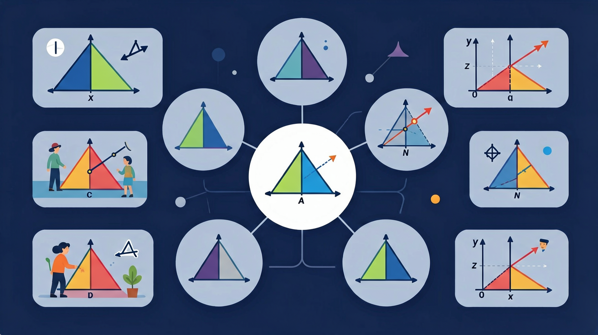

探索形状相同、大小不同的三角形之间的比例关系

❓ 为啥放大照片不会变形？这就是相似吗？
❓ 地图比例尺和相似三角形有啥关系？
❓ 两个三角形长得像就是相似？凭啥？
学完这一课，这些问题你都能自信地回答。
🎯 能说出相似三角形的三个判定定理
🎯 能根据已知条件判断两个三角形是否相似
🎯 能利用相似性质计算未知边长或角度
1. 两个三角形全等的条件包含什么？
2. 两个三角形形状相同但大小不同，这种关系叫做？
And：照相放大照片，地图缩小比例，图形形状不变只改变大小。
But：形状相同的两个三角形，各边之间到底有什么数量关系？
Therefore：让我们用比例来揭开相似三角形的秘密！
💪 △ABC∽△DEF，AB=6，DE=4，BC=9，则EF=？
知道了相似的定义，But 每次都要检查全部三边和三角很麻烦。Therefore 我们有三种简便的判定方法！
两组对应角相等，则两三角形相似
∠A=∠D，∠B=∠E → △ABC∽△DEF
💡 最常用！有两角相等即可（第三角自然相等）
两边成比例且夹角相等，则相似
AB/DE = AC/DF，∠A=∠D → 相似
三边对应成比例，则两三角形相似
AB/DE = BC/EF = CA/FD → 相似
一锐角相等的两个直角三角形相似（AA定理）
常见情况：斜线分割直角三角形
💪 判断：两三角形中，∠A=40°，∠B=60°；另一三角形∠D=40°，∠E=60°，则两三角形？
古希腊人用影子和相似三角形测量了金字塔的高度！这是一个非常经典的历史故事。
📝 例题：测量旗杆高度
小明身高1.6m，在阳光下，他的影子长0.8m，同时旗杆的影子长4m。求旗杆高度。
设旗杆高为 h
人与影子构成的三角形 ∽ 旗杆与影子构成的三角形（AA：阳光方向相同，地面都垂直）
h / 1.6 = 4 / 0.8 = 5
h = 5 × 1.6 = 8（m）
💪 小华身高1.5m，影长2m，同时测得树影长10m，树高为？
已知两相似三角形的相似比为 2:3，求它们的面积比。
相似比为3:5的两三角形，面积比为？
1. 下列哪个条件可以判定两三角形相似？
2. △ABC∽△DEF，相似比为2:3，AB=6，则DE=？
3. 相似三角形对应角的关系是？
4. 两相似三角形面积比为1:4，则相似比为？
5. 在△ABC中，D是AB的中点，E是AC的中点，则△ADE∽△ABC，相似比为？
古希腊用影子测量金字塔的历史故事
比例尺的数学本质就是相似比
谢尔宾斯基三角形：无限嵌套的相似三角形
相机成像原理中的相似三角形
先独立作答，再点选项查看对错与错因。
如图，△ABC∽△DEF，AB=5cm，DE=10cm，BC=7cm，则EF长度为
下列条件不能判定△ABC∽△DEF的是
某时刻测得教学楼影长15米，同时2米竹竿影长1.5米，则教学楼高度为
若△ABC∽△A'B'C'且相似比为3:4，当A'B'=12cm时，AB=____cm
答案：9
AB/A'B'=3/4→AB=12×3/4=9
如图，DE∥BC时，AD:AB=AE:____
答案：AC
平行线分线段成比例定理
关于相似三角形性质正确的是
用A4纸制作不同高度塔体，测量其影长
将相似条件拆解为边比例相等、角相等两类
用放缩变换解释相似的本质特征
对比全等与相似判定条件的异同
观察实物中的相似关系（如金字塔影子测量）
用相似比解决实际测量问题（如河宽测量）
✅ 需同时满足边长比例相同
💡 混淆几何特性与相似条件
✅ 强调必须AA或SAS相似定理
💡 类比全等判定产生负迁移
口诀：边成比例角相等，放大缩小都一样
类比：像手机照片放大缩小，形状不变只是大小变化
下列哪组条件能判定△ABC∽△DEF？
地图上1cm代表1km，实际距离5km对应图上距离是？
（中考题）如图，DE∥BC，AD=4，DB=6，则△ADE与△ABC的相似比是？
小明身高1.5m，影子长2m，同时测得旗杆影子长8m，旗杆高度是？
（迁移题）用相似三角形原理可以测量？
And：学生已学过全等三角形判定
But：当图形放大缩小时，对应角相等但边不成比例时是否相似？
Therefore：明确相似三角形的数学定义
相似三角形指对应角相等且对应边成比例的两个三角形。比如△ABC和△DEF，若∠A=∠D、∠B=∠E、∠C=∠F，且AB/DE=BC/EF=AC/DF=2/1，则称△ABC放大2倍后与△DEF相似，记作△ABC∽△DEF。特别注意：全等是相似比为1的特例！
🌍 手机里的照片放大后，虽然尺寸变了但人物轮廓不变——这就是相似形的实际应用。
以下哪组三角形一定相似？
And：知道相似定义
But：如何快速判断两个三角形是否相似？
Therefore：掌握相似三角形的三大判定定理
判定相似有三大招：1)两角对应相等（AA），比如△ABC中∠A=50°∠B=60°，△DEF中∠D=50°∠E=60°；2)三边对应成比例（SSS），如边长3/4/5和6/8/10；3)两边成比例且夹角相等（SAS），如边长5/7和10/14且夹角都是30°。注意：和全等不同，相似没有'边边角'判定！
🌍 设计师用相似原理制作不同尺寸的服装样板，只需量几个关键数据就能按比例缩放。
根据AA定理，已知△ABC和△DEF中∠B=∠E=45°，还需什么条件？
And：会判断相似
But：如何利用相似比解决实际问题？
Therefore：训练相似比的计算应用能力
相似比=对应边长度比，它能帮我们求未知边长。例如：△ABC∽△DEF，AB=6cm对应DE=4cm，相似比是6:4=3:2。若BC=9cm，则EF=9÷(3/2)=6cm。关键技巧：先确定对应边，再列比例式交叉相乘计算。比例中项也很实用：若a/b=b/c，则b²=ac。
🌍 测量高楼影子时，已知人高1.6米影长2米，楼影长30米，通过相似比算出楼高=1.6×(30/2)=24米。
两个相似三角形相似比为5:3，大三角形周长为40cm，小三角形周长是？
And：掌握基础应用
But：复杂图形中如何构造相似三角形？
Therefore：培养几何建模思想
遇到复杂问题要学会'搭桥'：1)找平行线（得同位角相等），比如梯形ABCD中AD∥BC，对角线交于O，则△AOD∽△COB；2)用公共角，如太阳光线与地面形成相同角度时，所有物体的高度与影子成比例；3)辅助线法，比如在河宽测量问题中构造'X型'相似。记住：模型越直观，计算越简单！
🌍 足球射门时，守门员根据人墙和球门形成的相似三角形快速判断防守位置。
如图，AB∥CD，AC、BD交于E，下列说法正确的是：
开放任务：用三步写出你如何向同学讲清「相似三角形」。